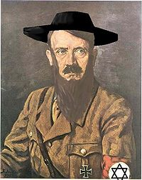

Piriódico:Predicciones para el 2011
 De: La Frikipedia, la enciclopedia extremadamente seria.
De: La Frikipedia, la enciclopedia extremadamente seria.
Gran Hermano terminará después de que algún héroe nacional mate a todos los que querían este programa en TV.
Predicciones para el 2011
 El nuevo presidente de Cuba
Como el Pulpo Paul y Walter Mercado fueron asesinados el año pasado por el Ejército Rojo, El Mudo contrató a una bruja cubana en Taiwán para que nos diera las próximas predicciones del año que acaba de comenzar y nos ha dado varias noticias buenas y varias malas:
- Fidel Castro morirá después de tanto tiempo al mando de Cuba pero será reemplazado por un clon de laboratorio de Hitler que iniciará una gran guerra entre Cuba y las Bahamas.
- Metallica y Megadeth se reunirán en un concierto benéfico a favor de todos los jebis víctimas del coma etíilico y otras enfermedades producidas por el alcohol, sin contar las otras víctimas de la guerra de bandas.
- Apple lanzara el iBoard. Un nuevo aparato verá la luz este año, del tamaño de una mesa y sin 3G, solo costará 1.000.000.000 de euros y se distribuirá en Japón y las Islas Caimán para incrementar el valor de las acciones de Apple.
- Facebook tendrá menos usuarios. Después de que algún loco provocara el suicidio en línea mas grande de la historia, el numero de usuarios de Facebook y población mundial se reducirá en al menos 2 millones de personas.
- Las fans de los Jonas y Justin Bieber tendrán un promedio de inteligencia mas alto. El promedio intelectual de las fans de estos intentos de músicos crecerá 0,000000000000000000000000000000000000000000000000000000000000000000000000001 % siendo optimistas.
- Los mayas comenzarán su plan para conquistar el mundo. Después de destruir a otras organizaciones secretas como los Masones, los Iluminatti y el club de Mickey Mouse, los mayas pondrán en acción su plan llamado "2012".
- SEGA recobrará el honor perdido. Este año podría volver a fabricar consolas y lanzaría remakes de juegos como Alex Kidd y Golden Axe, además de lanzar un buen juego de Sonic que no lo haga caer en vergüenza.
- Hugo Chávez morirá asesinado por gorilas. Así terminará la última visita de Hugo a sus familiares, sorry.
- Los judíos y los musulmanes se aliarán en contra de una nueva amenaza: los extremistas evangélicos que asediarán el Medio Oriente en nombre de los estadounidenses, los bancos y quizá Jesús.
- Manchester United o Recreativo ganaran la Liga española: WTF?
Autor(es):
- Genericool
- Dancob
- Pepexonega
Frikipedia 2005-2016, Licencia
GFDL 1.2 - Extraído por FrikiLeaks